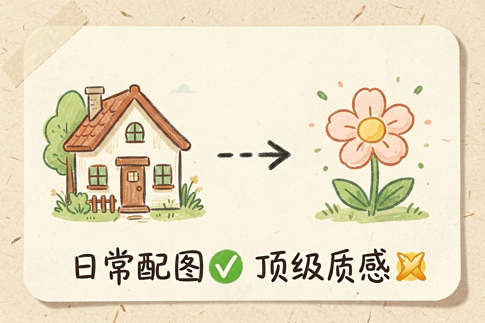
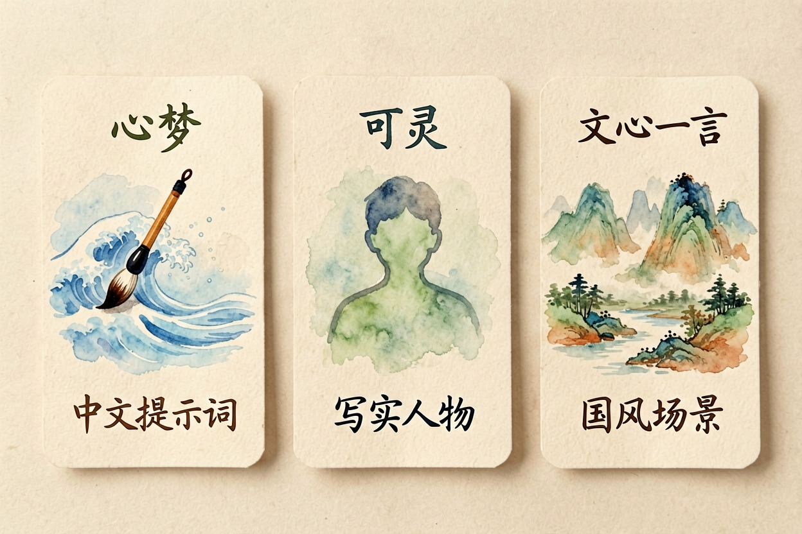
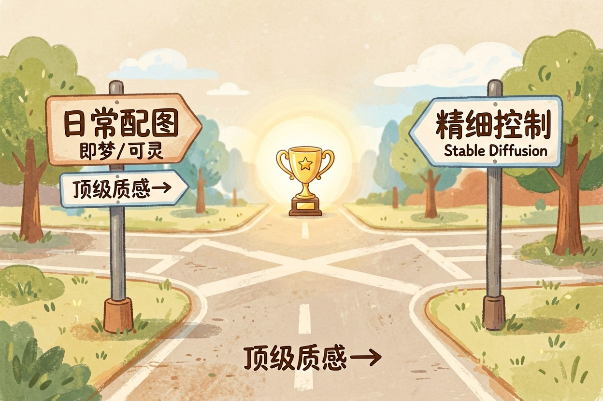

Midjourney 免费替代品：5 款中文可用的出图工具
找免费替代品先想清楚替代得了什么，日常出图可以，顶级质感替代不了。
Midjourney 替代品免费吗？先说清楚能替代什么

Midjourney{:target="_blank"} 替代品免费吗？有不少，但能替代什么要先说清楚。Midjourney 要付费还用 Discord，门槛双高，它强在风格质感和审美一致性。免费方案能覆盖日常配图、社交媒体素材、创意灵感——但如果你的产出要靠出图质感吃饭，Midjourney 的订阅费不该省。
一句话结论：日常出图可以免费替代，靠出图质感吃饭的，订阅费不该省。
国内直接可用的三款

| 工具 | 归属 | 擅长方向 | 免费类型 | 国内直接用 |
|---|---|---|---|---|
| 即梦 | 字节跳动 | 中文提示词理解、风格化插画 | 每日积分刷新 | 是 |
| 可灵 | 快手 | 写实风格、人物生成 | 有免费额度 | 是 |
| 文心一言 | 百度 | 中文场景理解、国风元素 | 基础免费 | 是 |
即梦的中文提示词理解领先，输入「水墨风端午海报」直接出图不用翻译。可灵在写实人物生成上表现好。文心一言的国风元素和中文场景理解稳定，但风格化程度不如前两者。
完全免费但要自己折腾：Stable Diffusion
Stable Diffusion{:target="_blank"} 是开源本地部署方案，软件本身免费。代价是配置门槛——需要一台带好显卡的电脑，以及一些技术基础来安装和调试。显存也很关键：8GB 以上跑基础模型没问题，6GB 会明显吃力，出图速度也跟着降。一旦配置好，出图成本几乎为零，且可控性极高（可以精确控制构图、风格、迭代一致性）。适合愿意花时间折腾、对出图有精细控制需求的人。不适合只想「打开就用」的人。
有免费额度的：ChatGPT 内置图片生成
ChatGPT{:target="_blank"} 免费版自带图片生成，随对话出图。它理解中文提示词、出图质量不差，但免费档有额度限制，国内访问需要额外网络条件。具体用什么模型、额度多少，以 OpenAI 官网当前说明为准。适合本身就在用 ChatGPT 的人，作为补充出图渠道。
怎么选：按场景分岔

日常配图、社交媒体系列、创意灵感——即梦或可灵足够。对出图有精细控制需求、愿意投入时间——Stable Diffusion 本地部署。需要顶级质感参赛或商用——Midjourney 仍然是首选，免费方案暂时替代不了。
需要顶级质感，Midjourney 的订阅费不该省。四档怎么选，见midjourney 值得订阅吗。Midjourney 替代品，适合日常替代，替代不了顶级质感。
最后说一句反的：如果产出要商用、或你吃饭靠的就是出图质感，别让免费方案凑合，Midjourney 的订阅费不该省。 免费方案适合日常和试水，不适合把它当生产力主力却抱怨质感不够。把下面这条提示词发给 AI，它能帮你把 Midjourney 提示词转成中文工具能用的格式：
把下面这条 Midjourney 提示词改写成适合中文出图工具的描述，
要求：去掉 --ar --v 这类参数、把英文风格词换成中文表述、保留主体和构图信息。
原提示词：【粘贴你的 MJ 提示词】工具价格与免费额度可能变动，实际以各工具官网当前说明为准。 Midjourney 替代品免费吗？有免费选项，但别指望替代顶级质感。 !尾图核心要点回顾
{kind=link}
本文信息核对于 2026-08-05。AI 产品的价格、免费额度与功能变动频繁，实际以各工具官网当前说明为准。